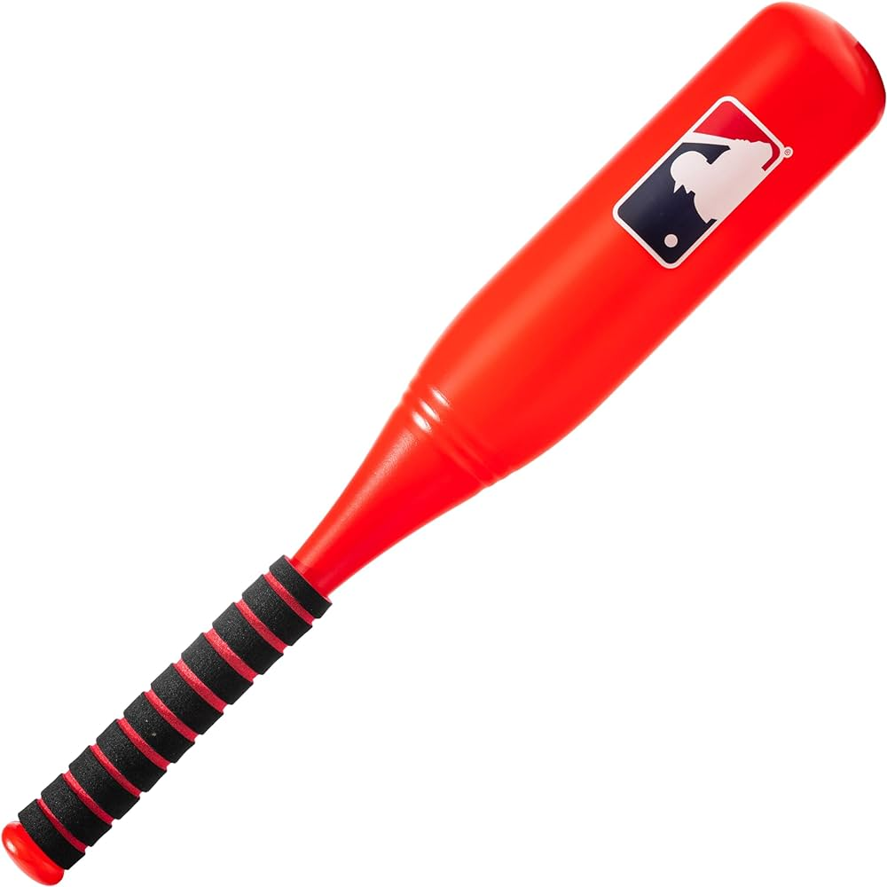

Bate de baseball
Transforma tus juegos de béisbol en eventos ecológicos con el Bate de Béisbol "EcoSwing" de TrashCicle. Este bate innovador está confeccionado con materiales reciclados de alta calidad, fusionando rendimiento excepcional con conciencia ambiental. Su diseño único refleja el compromiso de TrashCicle con la sostenibilidad, y ahora puedes canjearlo participando en nuestras iniciativas de reciclaje. Haz de cada swing una declaración a favor del medio ambiente con el Bate de Béisbol "EcoSwing": donde la pasión por el deporte se encuentra con la responsabilidad ambiental.